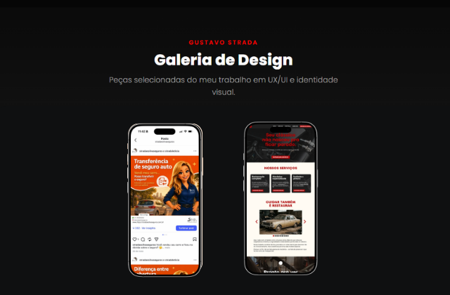
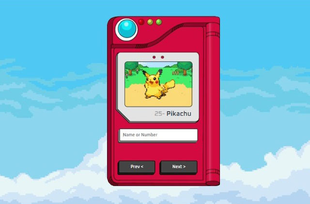

Full Stack Developer with a degree in Systems Analysis and Development, experienced in building web and mobile applications focused on delivering efficient, responsive, and well-structured solutions. Skilled in JavaScript, HTML5, CSS3, PHP, and MySQL, with experience in API integration, database modeling, and improving operational processes supported by data and controls. Also experienced in UX/UI Design and Social Media, creating user-centered interfaces and managing digital content and brand presence.
Universidade Nove de Julho
Coursework focused on front-end and back-end development, programming logic, databases, software engineering, computer architecture, and information security fundamentals.
Language Course
Currently improving English skills with a focus on conversation, aiming to strengthen communication in web and mobile development environments.
Developer in Training
Full Stack Developer · Early Technical Leadership
UX/UI Designer & Social Media
I possess strong skills in web development and UI/UX design,
specializing in designing and implementing user-centered visual
interfaces for websites and applications using HTML, CSS, and JavaScript.
I am proficient in creating dynamic, responsive, and accessible web pages
with a focus on delivering an exceptional user experience.
Currently, I am enhancing my JavaScript knowledge by exploring modern frameworks
like React.js and React Native, allowing me to build scalable, maintainable, and
professional-grade applications for web and mobile platforms.
I enjoy exploring mobile development to improve my Front-End skills. By using web
technologies like HTML, CSS, and JavaScript, I focus on creating hybrid mobile applications
that work seamlessly on both Android and iOS platforms.
This approach simplifies development by
eliminating the need to learn native languages for each operating system.
This methodology allows me to efficiently apply my web development knowledge, creating cross-platform
apps with consistent performance. By leveraging tools like Apache Cordova or Capacitor, I ensure a smooth
and reliable user experience on both platforms.
I have knowledge of PHP and Python. I started learning Python due to its simple yet powerful syntax, which
provided a strong foundation in programming.
Currently, my focus is on PHP, as I aim to pursue a career in web
development, where PHP plays an essential role in building dynamic websites and web systems.
Additionally, I am beginning my studies in MySQL to improve my database skills.
While I am still early in my SQL journey, I am dedicated to expanding
my knowledge and becoming proficient in managing and manipulating databases.

